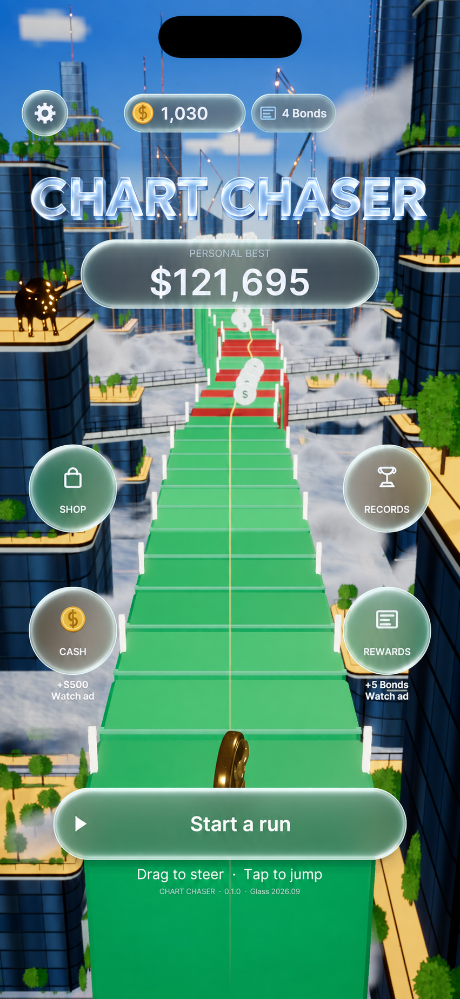

FIND YOUR RHYTHM
Simple controls. Quick decisions.
Drag to steer across the track and tap to jump. Read the road ahead and make your next move count.
A city above the clouds. A chart beneath your feet. Steer through the skyline, jump past danger and see how far one more run can take you.
Drag to steer · Tap to jump · Chase your personal best

Follow a rising and falling track of green and red candles through glass towers, golden rooftops and clouds. Collect along the way, avoid the bears and keep your run alive.
FIND YOUR RHYTHM
Drag to steer across the track and tap to jump. Read the road ahead and make your next move count.
MAKE IT YOURS
Visit the shop to browse, unlock and select your characters. Bring a different look to the same chase.
ONE MORE TRY
Build your portfolio during a run and keep chasing your personal best. Your records give every return a target.
Email contacttouchstonetech@gmail.com with “Chart Chaser” in the subject. Include your game version, device model and a short description of the issue.
Read how local progress, advertising, analytics and Game Center work, and learn about your privacy choices.